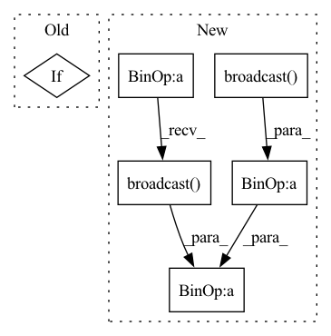

Pattern ID :24451
Before Change
running_mean = self.running_mean.broadcast(x, [0,2,3])
running_var = self.running_var.broadcast(x, [0,2,3])
norm_x = (x-running_mean)/jt.sqrt(running_var+self.eps)
if not self.affine:
return norm_x
w = self.weight.broadcast(x, [0,2,3])
b = self.bias.broadcast(x, [0,2,3])After Change
return norm_x
else:
w = self.weight / jt.sqrt(self.running_var+self.eps)
b = self.bias - self.running_mean * w
norm_x = x * w.broadcast(x, dims) + b.broadcast( x, dims)
return norm_x
BatchNorm2d = BatchNorm1d = BatchNorm
In pattern: SUPERPATTERN
Frequency: 3
Non-data size: 6
Instances Fragment ID: 76005316
Project Name: jittor/jittor
Commit Name: 79579b4a30434d43d79821469eb5501bf5a5063e
Time: 2020-11-25
Author: randonlang@gmail.com
File Name: python/jittor/nn.py
M Class Name: BatchNorm
N Class Name: BatchNorm
M Method Name: execute(2)
N Method Name: execute(2)
M Parent Class: Module
N Parent Class: Module
M File Name: python/jittor/nn.py
N File Name: python/jittor/nn.py
M Start Line: 351
M End Line: 371
N Start Line: 349
N End Line: 371
Before Change
x2mean = jt.mean(x*x, dims=[2,3], keepdims=1)
xvar = jt.maximum(x2mean-xmean*xmean, 0)
norm_x = (x-xmean)/jt.sqrt(xvar+self.eps)
if not self.affine:
return norm_x.reshape(output_shape)
w = self.weight.reshape((1,self.num_groups,C//self.num_groups,1))
b = self.bias.reshape((1,self.num_groups,C//self.num_groups,1))After Change
w = 1
b = 0
w = w / jt.sqrt(xvar+self.eps)
b = b - xmean * w
x = x * w.broadcast(x, [3]) + b.broadcast( x, [3])
return x.reshape(output_shape)
Relu = jt.make_module(relu)
ReLU = Relu Fragment ID: 76005314
Project Name: jittor/jittor
Commit Name: 79579b4a30434d43d79821469eb5501bf5a5063e
Time: 2020-11-25
Author: randonlang@gmail.com
File Name: python/jittor/nn.py
M Class Name: GroupNorm
N Class Name: GroupNorm
M Method Name: execute(2)
N Method Name: execute(2)
M Parent Class: Module
N Parent Class: Module
M File Name: python/jittor/nn.py
N File Name: python/jittor/nn.py
M Start Line: 480
M End Line: 495
N Start Line: 432
N End Line: 453
Before Change
variance = jt.mean(numerator.sqr(),dims=dims,keepdims=1)
denominator = jt.sqrt(variance+self.eps)
norm_x = numerator/denominator
if self.elementwise_affine:
norm_x = norm_x * self.weight+self.bias
return norm_x
After Change
xvar = (x2mean-xmean*xmean).maximum(0.0)
w = self.weight / jt.sqrt(xvar+self.eps)
b = self.bias - xmean * w
return x * w.broadcast(x, dims) + b.broadcast( x, dims)
LayerNorm2d = LayerNorm1d = LayerNorm
class GroupNorm(Module): Fragment ID: 76005310
Project Name: jittor/jittor
Commit Name: 79579b4a30434d43d79821469eb5501bf5a5063e
Time: 2020-11-25
Author: randonlang@gmail.com
File Name: python/jittor/nn.py
M Class Name: LayerNorm
N Class Name: LayerNorm
M Method Name: execute(2)
N Method Name: execute(2)
M Parent Class: Module
N Parent Class: Module
M File Name: python/jittor/nn.py
N File Name: python/jittor/nn.py
M Start Line: 458
M End Line: 465
N Start Line: 410
N End Line: 417